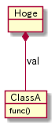

Lua のトランスコンパイラを考える
Table of Contents
lctags の機能追加が一段落したので、 別ツールの開発に取り組もうと思う。
その別ツールとして検討しているのが、Lua のトランスコンパイラである。
ここでは、検討中の Lua のトランスコンパイラについて内容をまとめる。
Lua のトランスコンパイラの仕様については、検討した結果を随時更新する。
1 Lua のトランスコンパイラが必要な理由
Lua は軽量で、かつ実行パフォーマンスも高い言語である。 しかし、Lua には次に挙げる欠点がある。
- Lua は動的型付け言語であるため、動的型付け言語の欠点が全て当てはまる。
- Lua は C や Java などの言語に比べるとマイナーな言語であり、開発をサポートするツールが少ない。
規模の小さいスクリプトを作成している分には問題ないが、 ある程度の規模のスクリプトを開発する場合、 上記問題はインパクトが大きい。
この問題を解決するために Lua のトランスコンパイラが必要となる。
ちなみに、ここで言う Lua のトランスコンパイラとは、 ある言語で書いたスクリプトを Lua のスクリプトへ変換するツールを指す。
1.1 欠点に対するアプローチ
ここでは、Lua の上記欠点に対するトランスコンパイラを用いたアプローチを示す。
- 動的型付け言語の欠点
- トランスコンパイラの変換元の言語に静的片付け言語を採用することで、 動的型付け言語の欠点をカバーすることが出来る。
- これは typescript と javascript の関係と同様
- 開発をサポートするツールが少ない
- トランスコンパイラの変換先の言語に Lua だけでなく、 C 等のメジャーな言語をサポートすることで、 そのメジャーなサポートツールの利用が可能となる
2 トランスコンパイラに必要な要件
上記の欠点をカバーするためのトランスコンパイラに必要な要件を挙げる。
- 変換元の言語として、静的片付け言語を採用する
- 変換先の言語として、 Lua と C/C++ 言語をサポートする。
- 以降 C と記載した場合は C++ も含める。
- C への変換は、C でビルドして native で動かすのが目的ではなく、
メジャーな言語に変換してサポートツールを利用するのが目的である。
- よって、変換後の C プログラムの実行パフォーマンスを優先しない。
- luaSocket 等の標準外モジュールを利用したプログラムは、
C への変換を行なっても、変換後のリンクまではサポートしない。
- この場合、プログラムの動的な情報を元に開発をサポートするツールが 利用できなくなってしまうが、 開発をサポートするツールは動的な情報と静的な情報を利用するタイプがあり、 静的な情報を利用するタイプはリンクまで出来なくても利用出来る。
- よって、標準外モジュールの C へのコード変換は非サポートとする。
- ただし、標準外モジュールのスタブの雛形までは作成する。
- スタブを作成し、スタブの中身を実装すれば動かせるレベルにする。
- Lua への変換は、変換後の Lua スクリプトの実行パフォーマンスを優先する。
- というか、変換元の言語ほぼそのまま Lua に落せるような Syntax にする。
- 変換時に最適化のようなことはせず、基本的には書かれたままの処理にする。
- トランスコンパイラ自体を Lua で実行可能なスクリプトとして開発する
- 変換元の言語で書かれたスクリプトを読み込み、そのまま実行可能とする
- 実行時に Lua ファイルと中間ファイルを生成し、次に実行する際は変換済みファイルを利用する
- 中間ファイルには、元のファイルに定義されている型やメソッドなどのメタ情報を含める
2.1 変換元の言語の要件
変換元の言語の要件を挙げる
- 変換先の言語に C 言語をサポートするため、
メモリ管理として gc を前提にしない。
- とはいえ、alloc/free を明示するのは使い勝手が悪過ぎるので、 Rust の所有権方式を参考にする
- 学習コストを下げるため、Syntax は C 言語/Lua を基調とする。
- コルーチンや anonymous 関数、クロージャ等、 Lua が採用している機能をなるべく採用する。
- ただし、 metatable の概念は Lua の独自色が強過ぎするので採用しない。
- 言語レベルでオブジェクト思考プログラミングをサポートする
- Lua がサポートしない機能は、採用しない。
- Lua はオブジェクト思考プログラミングをサポートしている訳ではないが、 metatable を利用することで実現可能である。
- metatable を利用することで、さまざまなことが実現可能だが、 metatable のトリッキーな使い方はサポートしない。
- メジャーな言語で利用可能なものを採用し、実現方法として metatable を利用する。
- 値は符整付き号数(int)と浮動小数(real)をサポートする。
- ビット幅の違いや、符号の有無はサポートしない。
- Lua スクリプトで書かれたモジュールは、 Glue 無しでそのまま利用可能とする。
- Lua の標準関数を全て利用可能とする。
- ただし、関数名は完全一致しなくても良い。
- 少なくとも lctags を開発出来るレベルにはする。
- 記載したコメントは、変換前の位置に該当する変換後の位置にそのまま挿入する。
- これは lint 等の静的解析ツールで指摘された際、 その指摘を抑制するためにコメントが利用されるため、 コメントが所定の位置に挿入されることが必要。
- table の概念を、array(list)と map に分ける。
- これは出力先に C を考えたときに array と map に分けた方が扱い易いのと、 そもそも Lua の table が ipairs と pairs で動きが変わる設計なのがイマイチなので。
- ただし、 array のインデックスは 1 からとする。
- array, map は generics をサポートする。
3 変換元の言語の syntax
3.1 組込み型
組込み型として、次の型を持つ。
- int
- 符号付き整数
- int?
- nil を代入可能な int
- real
- 浮動少数点実数
- real?
- nil を代入可能な real
- string
- 文字列 (Lua の文字列そのもの)
- Array
- 配列( インデックスは 1 から )
- Map
- キーと値の関連付け
- func
- 関数
- stem
- 上記のいずれか何でもあり
- Lua の変数そのもの
3.1.1 型変換
一部の型の値は、型を変換することが出来る。
変換する場合は次の書式を利用する。
val@type
これは val の値を type に変換することを宣言する。
val@int
例えば、上記は val の値を int に変換している。
3.2 コメント
Lua と同じ書式をサポートする。
3.3 数値
数値表現は Lua と同じものを採用する。
3.4 文字列
文字列表現は Lua と同じものを採用する。
Python と同じ format 書式を採用する。
"10 + %s = %d" %["1", 11] -- "10 + 1 = 11"
ただし、複数の引数は [] で指定する。
3.5 変数宣言
let name : type;
let で変数宣言を行なう。 let に続けて変数名を指定する。 型は変数名に続けて : を入れて型指定する。
let val: int;
例えば、上記は int 型の val 変数を宣言する。
変数は基本的に local になる。 global な変数宣言については、後述する。
3.5.1 配列(Array)型の宣言
let name : type[];
配列型は、上記のように型の後に [] で宣言する。
let val: int[];
例えば、上記は int 配列型の val 変数を宣言する。
3.5.2 Map 型の宣言
let name : Map<keyType,valType>;
Map 型は、上記のように keyType と valType で宣言する。
let val : Map<int,string>;
例えば、上記はキーが int 型で、値が string 型の変数 val を宣言する。
3.6 制御文
Lua と同じ制御文(if,while,for,repeat)をサポートする。
3.6.1 if
if exp {
}
elseif exp {
}
else {
}
if は Lua と同じ構文とする。 ただし、ブロックは {} で宣言する。このブロックは必須である。 C のようにブロックを宣言せずに 1 文だけ書くことはできない。
3.6.2 while, repeat
while exp {
}
repeat {
} exp;
while, repeat は Lua と同じ構文とする。 ただし、ブロックは {} で宣言する。このブロックは必須である。 C のようにブロックを宣言せずに 1 文だけ書くことはできない。
Lua と同様 continue もない。
3.6.3 for
for name = exp1, exp2, exp3 {
}
for は、イテレータを使用しないタイプの制御とする。 イテレータを利用するタイプは each とする。
ブロックは {} で宣言する。このブロックは必須である。 C のようにブロックを宣言せずに 1 文だけ書くことはできない。
3.6.4 each
each val in exp {
}
each は、イテレータを使用するタイプの for とする。 ブロックは {} で宣言する。このブロックは必須である。 C のようにブロックを宣言せずに 1 文だけ書くことはできない。
exp の仕様は Lua と同じ。
3.6.5 goto
goto はサポートしない
3.7 関数宣言
defun name( arglist ) : retType {
}
関数宣言は、上記のように defun で行ない、name で関数名を指定する。 name は省略可能。 引数は arglist で宣言し、変数宣言の let を省略した形で宣言する。 戻り値の型は、retType で宣言する。型宣言は 変数宣言の : 以降と同じ。
関数宣言に関して、次の制限を持つ。
- 関数オーバーロードをサポートしない
- 演算子オーバーロードをサポートしない
defun hoge( val1: int, val2: int ) : int return val1 + val2; end
3.7.1 可変長引数
可変長引数は Lua の … を利用する。
なお、 … の値は stem 型として扱う。
defun hoge( ... ) : stem let val: stem = ...; return val; end
例えば、上記関数は引数に与えらえた第一引数を return するが、 このときの型は stem となる。
3.8 クラス宣言
オブジェクト指向プログラミングのためのクラスをサポートする。 クラスを継承した場合、C ではなく C++ として変換する。
クラスに関して、次の制約を持つ。
- 多重継承はサポートしない。
- generics(template) はサポートしない。
- 全てがオーバーライド可能なメソッドとなる。
- オーバーライドの抑制はできない。
- 継承間で引数の異なる同名メソッドは定義できない。
- ただし、コンストラクタは例外。
declass hoge : super {
pri let val : int { pub, pri };
pub __init( arglist ) {
super( arglist );
}
pub __free() {
}
pub func( arglist ) mut : retType {
}
pub static sub( arglist ) : retType {
}
pri let data : Other;
advertise data prefix { whitelist };
}
アクセス制御は pub/pro/pri を使用。 pro は、自分自身と継承しているクラスからアクセスを許可する。
static を付けることで、クラスメソッド、クラスメンバとなる。
3.8.1 メンバ宣言
メンバ宣言は、変数宣言と基本は同じだが以下の点で異なる。
型宣言の後の {} で、アクセッサを宣言できる。
このアクセッサは getter, setter の順に宣言し、 宣言箇所にはアクセス権限(pub/pro/pri)を指定する。
pri let val : int { pub, pri };
例えば上記の場合、 メンバ val に対して pub の getter と pri の setter が作られる。 作られる getter と setter は、 get_val(), set_val() のメソッドとなる。 同名のメソッドがある場合は、この宣言は無視される。
3.8.2 メソッド
pub func( arglist ) mut : retType {
}
メソッドは上記のように宣言する。
アクセス制御とメソッド名、引数と続き、 そのメソッドが mutable な処理を行なうかどうかを宣言し、最後に戻り値の型を宣言する。
メソッド内で自身のメンバ、メソッドにアクセスする場合は self を使用する。
クラスメソッドからクラスメンバにアクセスする場合も、 self を利用する。
3.8.3 コンストラクタ
コンストラクタは __init で宣言する。 スーパークラスのコンストラクタをコールする場合は super() を使用する。 super() は、コンストラクタの先頭で呼び出す必要がある。 これは Java と同じ扱い。
コンストラクタ内で、自分自身にアクセスする場合は self を使用する。
3.8.4 デストラクタ
デストラクタは __free で宣言する。 スーパークラスのデストラクタは、サブクラスのデストラクタ実行後に自動でコールされ、 明示的には呼び出せない。
変換後の Lua と C では、デストラクタの実行タイミングが異なる。 Lua では、GC のタイミングで実行する。
3.8.5 advertise
これは、メンバのメソッドを透過的に呼び出せるようにする宣言である。

例えば上記のようなクラス構造のとき、 次のように Hoge クラスのインスタンスを作成した場合、
Hoge hoge; hoge.val.func();
hoge インスタンス内の val で定義しているメソッドにアクセスするには、
上記のように hoge.val.func(); としてアクセスする必要がある。
あるいは val の func() メソッドにアクセスするための wrapper メソッドを、
Hoge クラスに追加する必要がある。
これは非効率と感じる。 特に Hoge クラスにメソッドを追加するのは非常に効率が悪い。
この非効率さが、クラス設計時に本来包含にすべきものを継承としてしまう間違いを 誘発している要因になっていると個人的には感じている。
これは、その非効率さを軽減するものである。
advertise することで、そのメンバのメソッドの wrapper メソッドが 自動で展開される。
これにより、次のように書ける。
Hoge hoge; hoge.func();
なお、メンバの全メソッドを公開してしまうのも良くないので、 whitelist として、公開するメソッド名を列挙できる。 whitelist を指定しない場合は、全ての mut メソッドを公開する。 アクセス制御は、元のメソッドと同じ。